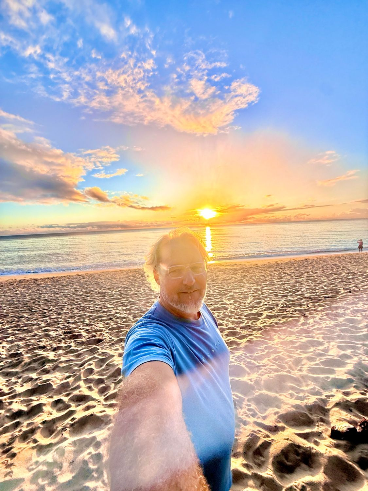
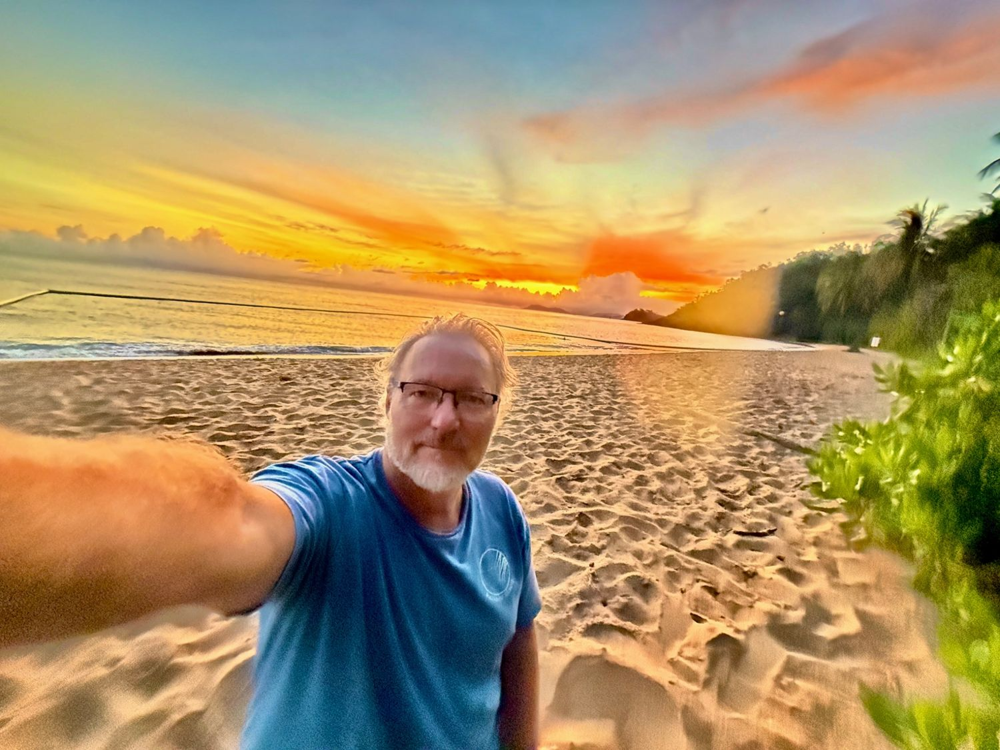
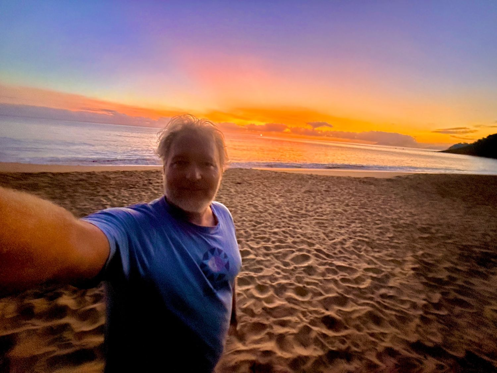
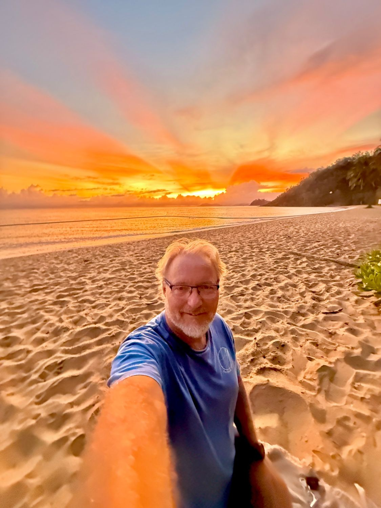

Understand Redox Signalling
Discover the fascinating biology of how cells use redox processes as part of their communication, regulation and response systems.
Explore Redox Biology
Cellular Intelligence · Aging Strong · Human Potential
Every moment of every day, your cells are sensing, communicating, adapting and responding. Most of us were never taught about this extraordinary communication network. I certainly wasn't.
Then two words entered my life and changed the questions I was asking:
What began as curiosity became a journey into cellular communication, human potential and what it might really mean to Age Strong — from the cell up.
Explore the StoryAn invitation
There's no pressure here. You don't need to believe my story or arrive at the same conclusions I have.
That's exactly how my journey began.

My Story
I grew up as one of ten children in a loving family, with the beach and ocean as our backyard and a father who was a builder.
Even as a little boy, I was insatiably curious. I wanted to know how things worked. Why things happened. What was possible. I explored, questioned, pulled things apart, built things and looked at the world with a genuine sense of wonder.
But some of my greatest teachers weren't people or books.
They were the ocean, the land, the trees and the natural world around me.
From a young age, I paid attention to what happened naturally. I watched the ocean and its rhythms. I observed how nature adapted and regenerated. I noticed the relationships between things — how nothing in a healthy natural system seemed to exist entirely on its own.
And sometimes the greatest insights came when I stopped searching for an answer altogether.
When I became still.
When I observed.
When I listened.
Whether I was beside the ocean, amongst trees, walking through a forest or simply sitting quietly on the land, nature had a way of bringing me back to myself. It still does.
I don't think that curious little boy ever really left me. That same curiosity followed me into building and design, adventure, health and wellbeing, and eventually into an entirely different landscape:
Looking back, however, I realise there was something even deeper beneath my curiosity.
There was something I experienced when I became still in nature — beside the ocean, amongst the trees, with my feet on the earth — that I struggled to put into words as a young boy. I simply knew it felt like connection.
And often, when I stopped searching so hard and became quiet enough to listen, insights and answers seemed to arrive. That feeling has stayed with me my entire life.
Today, I understand it as connection with something greater than myself — with nature, with my own soul and Spirit, and ultimately, for me, with God.
And at the heart of that connection is a feeling I can describe very simply:
Perhaps that's why I've remained so curious. I've never been satisfied simply knowing what something is. I've always wanted to understand what sits beneath it — what connects it, what gives it life and how it relates to everything around it.
I want to observe. I want to listen. I want to feel. And I want to keep asking better questions.
For me, science and spirituality don't need to compete.
One helps me understand.
The other helps me feel.
And sometimes they seem to lead me towards the very same question:
At 61, I'm no less curious than that little boy growing up beside the ocean. If anything, I'm more curious than ever.
When the Questions Became Personal
Around the age of 40, something happened that turned my lifelong curiosity in a very different direction.
I was surfing when I went head-first into a sandbar and seriously injured my neck.
The ocean had always been one of the places where I felt most alive, most connected and most at home. Suddenly, it was also the place where my relationship with my own body changed.
How does the human body actually heal?
How does it know what to repair?
How do cells know what is happening somewhere else in the body?
What tells the body when something is out of balance?
At the time, I didn't have language such as cellular communication or redox signalling. I simply had questions. And I had a body that wasn't responding in the way I hoped it would.
For close to ten years, I explored natural approaches to supporting my body. I received treatments virtually every week and worked with people who genuinely wanted to help me.
I kept looking. I kept asking. I kept listening to my body. But despite all that effort, the underlying problem remained part of my everyday life.
When something doesn't make sense to me, I don't stop being curious. I become more curious.
Then, on 11 September 2014, another conversation entered my life. I was introduced to ASEA — and to two words I had never heard before:
I had no idea what they meant. But something about the concept immediately caught my attention.
Here was a conversation about the human body that wasn't beginning with symptoms. It was beginning with cells. With communication. With signalling. With the body's extraordinarily complex systems for sensing its environment and responding to change.
What if there was an entire level of communication happening inside the human body that I'd simply never known existed?
That question sent me down another rabbit hole. I started reading. I started listening. I started asking questions. And just as I had done since I was that curious little boy beside the ocean, I began observing what happened for myself.

Cellular Intelligence
Every moment of every day, trillions of cells are sensing, communicating, adapting and responding to what is happening around them.
They aren't working independently. They are part of an extraordinary biological communication network — constantly exchanging signals that help the body coordinate normal function, maintain balance and respond to change.
This is what I think of as:
And underneath much of this communication is something most of us were never taught about: redox signalling.
Redox signalling is one of the fundamental ways cells communicate and respond to their environment. These signalling processes help cells sense what is happening, communicate and coordinate biological responses.
This isn't something we're adding to the human body.
It's something the body already does.
The deeper I went into this science, the more my perspective changed. Instead of asking only, “What can we put into the body?” I became fascinated by another question:
That question opened an entirely different conversation for me — about health, performance, recovery, ageing and what it might really mean to Age Strong — from the cell up.
From Ingredients to Information
For generations, much of the conversation around nutrition and wellbeing has focused on ingredients: vitamins, minerals, proteins, essential fats, antioxidants and plant compounds.
And those things matter. Our bodies need the right raw materials. But there's another part of the story that fascinates me even more.
Every second, our cells are receiving information, responding to their environment and coordinating an extraordinary number of biological processes. One of the ways this happens is through redox signalling.
For many years, reactive oxygen species were talked about primarily as damaging by-products of metabolism — something we needed to neutralise. We now understand that the story is considerably more interesting.
At controlled physiological levels, certain reactive molecules can also act as signals. One important example is hydrogen peroxide. At appropriate levels and in the right place and time, hydrogen peroxide can act as a cellular messenger, influencing signalling pathways involved in how cells adapt and respond to changing conditions.
At excessive levels, however, reactive molecules can contribute to oxidative stress and cellular damage.
The body has evolved sophisticated systems to manage that balance, including its own antioxidant defence networks. Among them are enzymes such as superoxide dismutase — SOD — and glutathione peroxidase — GPx, together with systems involving glutathione, thioredoxin and other molecules that participate in maintaining redox balance.
Ingredients provide the building materials.
Signals help coordinate what happens within the system.
And once I began looking at the human body through the lens of communication rather than ingredients alone, another question became impossible for me to ignore:

Then Something Changed
When I was introduced to ASEA on 11 September 2014, I didn't experience some dramatic overnight transformation. Quite the opposite.
For months, I simply continued. I was curious about the technology and about redox signalling, so I incorporated it into my daily routine and paid attention to what I noticed.
And then came a morning I can still remember vividly.
1 May 2015.
I woke up and realised I could turn my head to the right without experiencing the response that had restricted me for almost ten years.
“Has the Earth just wobbled? Are the moon and stars in a different alignment? What on earth just happened?”
Because suddenly I could do something I hadn't been able to do comfortably for years. It was extraordinary to me.
I didn't have a laboratory measuring what had happened inside my body, and my personal experience can't establish what caused that change or predict what another person might experience.
And more importantly, it made me even more curious. I wanted to understand the biology. I wanted to understand redox signalling. I wanted to understand what scientists were discovering about cellular communication and the body's own systems of response, repair and balance.
What began for me as curiosity had become something much more personal. And that was the beginning of a journey that has now continued for more than twelve years.
I'm still asking questions.
I'm still learning.
And I'm still curious.
You've Got My Attention
But there is something important to understand about the way I've approached the major turning points in my life.
Whether the challenge has been physical, emotional, financial or spiritual, I've learned to change the question.
Rather than becoming consumed by “Why is this happening to me?” I've learned to become still enough to say:
“You've got my attention. I'm listening.”
What is this experience here to show me?
What am I being invited to understand?
What is asking to be remembered?
Who am I being invited to become?
I've come to believe that some of life's greatest challenges can also become invitations. Not because the experience itself is necessarily good. Not because pain or loss should be romanticised. But because once I'm standing in the middle of something I cannot change, I still have a choice about how I meet it.
I've experienced that throughout my life. Physical injuries. Personal challenges. Times of uncertainty. Moments when the path ahead wasn't clear.
Again and again, life seemed to be asking me to stop. To listen. To go deeper. And ultimately, to discover something within myself that perhaps I hadn't yet fully expressed or remembered.
So when cancer entered my life, the question eventually became bigger than cancer.
I was given medical advice and treatment options. I listened, asked questions, researched extensively and ultimately made deeply personal decisions about my own path.
Those decisions were mine. They are not medical advice, and I would never suggest that someone facing a serious diagnosis should simply make the choices I made.
But underneath all the information, all the opinions and all the uncertainty, I returned to something that had guided me since childhood.
I listened to the people around me. I listened to the information available to me. I listened to my body. And I listened deeply to that quiet place within myself — the place I have always associated with soul, Spirit and God.
And once again, underneath everything, I found Connection. Connection to myself. Connection to the people I loved. Connection to nature. Connection to God.
My health journey continued alongside medical monitoring, and over time I received news I will never take for granted:
I don't offer my experience as proof of what caused that outcome, nor can one person's experience predict what will happen in another person's body.
What I can speak about is what the experience changed within me.
Every experience can become an invitation to know myself more deeply.
To remember more of who I am. To become a higher and better expression of myself. And then — importantly — to do something with what I've learned.
Because for me, wisdom isn't meant simply to be accumulated.
It's meant to be lived.
It's meant to be shared.
And ultimately, it's meant to become service.
I didn't come through that experience simply wanting more years.
More presence.
More strength.
More curiosity.
More connection.
More contribution.
More service.
More love.
And perhaps that is where Aging Strong truly began for me.

Aging Strong
For me, Aging Strong isn't about looking younger or pretending that ageing isn't happening. It's about asking a different question:
How capable can I remain?
How well can I move?
How deeply can I connect?
How curious can I remain?
How much can I continue to learn, create, contribute and serve?
And how well can I support this extraordinary body that has carried me through every experience of my life?
Today, movement is part of my life. I swim. I strength train. I practise Kundalini yoga. I spend time in the ocean. I embrace heat, cold, breath, stillness and movement.
But Aging Strong is about far more than physical strength.
It's physical.
It's emotional.
It's mental.
It's spiritual.
It's maintaining the capacity to participate fully in life. To get down on the ground and get back up. To explore. To create. To love deeply. To remain useful. To contribute. To serve.
And perhaps most importantly:
I'm fascinated by what becomes possible when we stop thinking about ageing simply as decline and begin asking how we can support our bodies, minds, relationships and sense of purpose throughout the years ahead.
I don't know how many years I have. None of us do. But I know how I want to meet them.
Present.
Strong.
Curious.
Connected.
Contributing.
And fully alive.
The Changing Conversation
This is where the science became particularly relevant to me. Because ageing isn't simply about the number of candles on a birthday cake. Changes are taking place throughout the body — right down at the cellular level.
Our cells are constantly exposed to challenges from normal metabolism, our environment and everyday life. The body has sophisticated systems for sensing those challenges, responding to them and restoring balance. Redox signalling is part of that story.
As we grow older, aspects of our redox regulation and cellular stress-response systems can change. The relationship between reactive molecules, antioxidant defence systems and cellular signalling can become less resilient.
And this is where the old idea that “Free radicals are bad and antioxidants are good” becomes far too simplistic.
Some reactive molecules are capable of causing damage when they become excessive or poorly controlled. But some of those very same molecules also act as essential cellular signals.
That distinction fascinated me. Because once again, the story wasn't simply about adding another ingredient. It was about the body's ability to:
Communicate. Regulate. Adapt. Respond.
Our own defence systems are part of this process. Enzymes such as SOD and GPx, together with glutathione and other redox systems, help maintain the biological balance necessary for normal cellular function.
Research into ageing increasingly shows us that maintaining redox homeostasis isn't a static process.
It's an ongoing conversation inside the body.
How do we support our bodies to remain capable, adaptable and resilient as we grow older?
For me, that's a much more interesting conversation than simply attempting to look younger.
Where ASEA Entered My Story
By now you can probably understand why those two words I first heard in 2014 captured my attention: Redox signalling.
I hadn't gone looking for a company. I hadn't gone looking for another wellness trend.
And ASEA happened to be the doorway through which I first discovered this extraordinary area of biology.
What exactly are redox signalling molecules?
What role do they play naturally within the human body?
How do cells use these signals?
What does the broader scientific literature say?
What evidence exists specifically for this technology?
Those questions matter to me. Because there's an important difference between understanding the established science of redox biology and understanding research conducted on a particular redox technology or product.
I don't believe those two things should ever be blurred together.
Over the years, research associated with this technology has involved scientists, laboratories and academic institutions in different parts of the world. I've continued following that work because I'm interested in evidence — not simply claims.
And today, anyone who wants to explore further can do exactly what I did:
Read.
Question.
Investigate.
Follow the references.
Stay curious.
I don't need you to believe my story.
What I invite you to do is explore the information for yourself, ask your own questions and decide what deserves your curiosity. That's exactly how my journey began.
Explore the Science
Curiosity has shaped my entire life. So I'm not asking you to simply accept what I say about redox signalling, cellular communication or this technology. Explore it for yourself.
Follow the research. Read the papers. Ask questions. Look beneath the headlines and form your own understanding.
Discover the fascinating biology of how cells use redox processes as part of their communication, regulation and response systems.
Explore Redox BiologyGo deeper into published scientific literature and research connected with redox science and the technology that first introduced me to this field.
Explore the ResearchLearn more about the redox technology I first encountered in 2014, the products developed from it and the research that continues around this field.
Visit my ASEA pageStay curious.
Ask better questions.
Follow the evidence.
Listen to your own experience.
That's what I've been doing for more than a decade.
Connection
If you've made it this far, perhaps something here has sparked a question. That's where every meaningful chapter of my own journey has begun.
You don't need to have all the answers. Neither do I.
I'm still learning, still exploring and still fascinated by the extraordinary intelligence of the human body — and by what becomes possible when we become more conscious of how we live, move, connect and care for ourselves as we grow older.
For me, this journey has never been simply about a product.
How do we live well?
How do we remain capable?
How do we stay connected?
How do we continue growing?
And how do we use what we learn to contribute and serve others?
Those are questions I expect I'll be exploring for the rest of my life.
So if something you've read here has awakened your curiosity, I'd love to hear from you. Not to convince you of anything.
Tell me what brought you here. Tell me what you're curious about. Ask me the questions that matter to you.
And if I can share something from my experience, point you towards research or simply help you explore another perspective, I'm happy to do that.
Curiosity opens the door.
Connection changes the conversation.
And what we do with what we discover can become contribution and service.
Email me directly, or say hello on Facebook or Instagram.
sepphock@pm.meSepp Hock
Salt Water Man 🌊 • Aging Strong 💙
Connection. Contribution. Service.